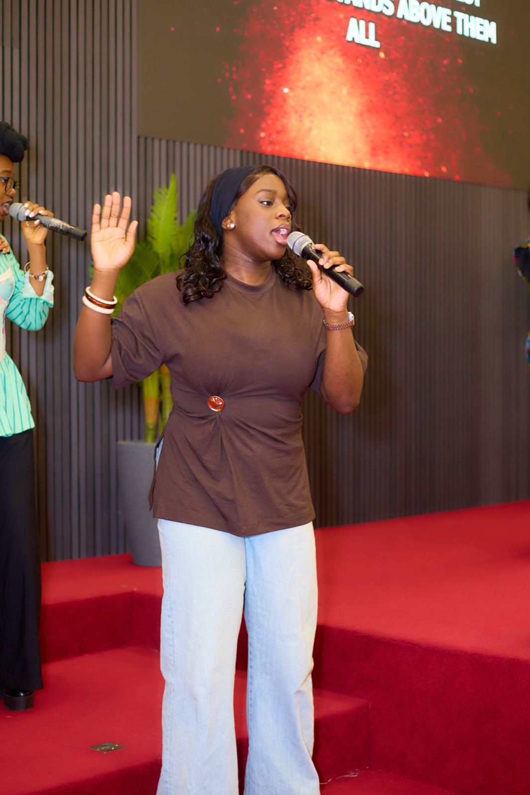
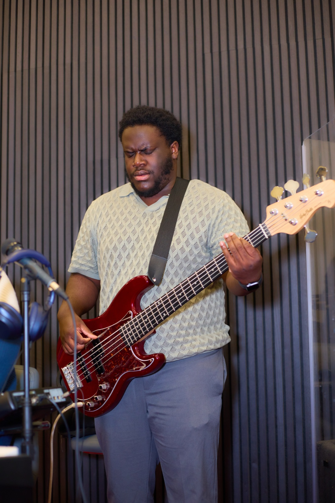

[Photo from the church archive]
[2004]A first prayer meeting
[Eight people in a living room in Dublin 15.]
[Confirm the exact RCCG mission wording.]


Welcome to King’s Court. At King’s Court, we are more than a church, we are a family. For [over two decades], God has been using this ministry to transform lives, strengthen faith and nurture lasting relationships rooted in love and purpose.
Our story is one of people growing together: from children who found their calling in music and service, to families who discovered community, to new members who found friendship and belonging. Each testimony reminds us that King’s Court is not just a place of worship, but a home where lives are built and destinies are shaped.
View moreOur history is more than dates and events. It’s a testimony of God’s faithfulness and the dedication of those who built and nurtured this house of worship.
[2004]A first prayer meeting
[Eight people in a living room in Dublin 15.]
[2006]King’s Court is planted
[First Sunday service in a rented hall.]
[2014]A home of our own
[Moved into our current building.]
[2026]Still growing
[Four weekly gatherings and a family from 20+ nations.]
And the story is still being written. Come and be part of the next chapter.
Plan your visitOur leaders are passionate about guiding, teaching and shepherding God’s people with love and wisdom.
Pastor Segun Gbadebo (PSG) is the Pastor in charge of RCCG King’s Court Dublin and the Provincial Pastor of RCCG Province 2, Ireland.
[Two or three sentences in his own voice: how he came to faith, what he loves about Dublin, and what a first-time visitor should know about him.]
“[A short welcome from the pastor, one line people remember.]”
Our Sunday Family Service runs every Sunday, 10:00am – 12:30pm. Doors open at 9:40am.
Midweek, we meet on Zoom from 6:30 – 7:30pm: Digging Deep Bible study on Wednesdays, the Youth Service on Thursdays and Faith Clinic prayer on Fridays. Morning Glory is on the first Friday of every month, 5:30 – 6:30am.
See the full scheduleWe meet at Unit 2, Damastown Way, Damastown Industrial Estate, Dublin 15 [Eircode].
See the map[Free on-site parking at the church. Overflow parking on X Road.]
Yes. Children’s church runs during the Sunday service for ages [3–12]. Young people have their own Youth Service every Thursday, 6:30 – 7:30pm.
Yes. Behind every Sunday is a family that serves. Fill in the First Timer form and we’ll help you find a team.
Join us nowYes. Send us a prayer request and we’ll stand with you in prayer. Counselling, including marriage counselling, is also available [how to book].
Send a prayer request